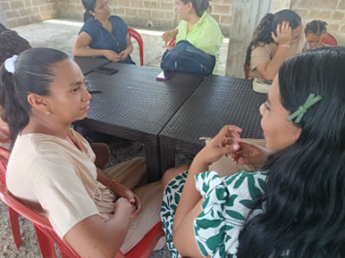
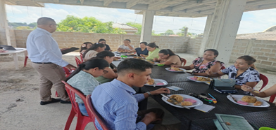
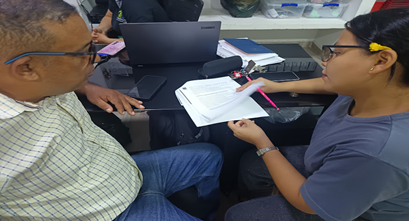
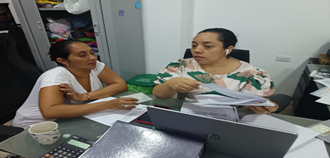
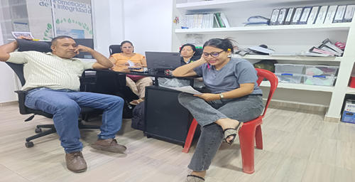
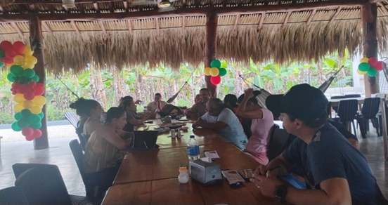
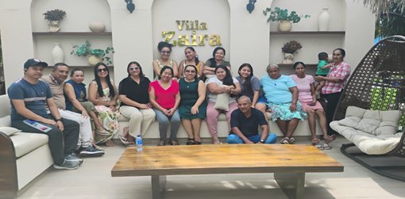
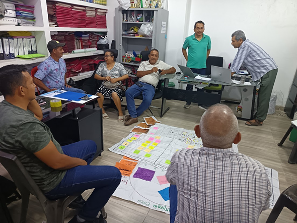

Staff, Educadores y Liderazgo
Fortalecimiento de la cultura institucional, capacitación continua y motivacional del equipo ministerial.
Actividad de Incentivo a Educadores
Fortalecer la motivación y vocación del equipo educativo a través de una jornada reflexiva espiritual.
Descripción: Jornada de integración y taller reflexivo que giró en torno a los textos bíblicos corporativos: 2 Corintios 4:1, 2 Corintios 4:7 y 2 Corintios 4:16-18.
- Enseñamos por misericordia.
- Perseveramos sin desfallecer.
- Servimos mostrando a Cristo como Señor.



Formación en Protección y Salvaguarda
Fortalecer la cultura institucional de protección...
Descripción: Espacio de reflexión en torno al texto bíblico 1 Corintios
15:58 e integración.
• Permanecer firmes en el llamado
• Seguir creciendo, no solo en
habilidades, sino en intimidad con Él
• Renovar el gozo del servicio, recordando para
Quién lo hacemos.



Actividad de Fin de Año - Staff
Cierre anual ministerial, agradecimiento e integración del equipo de trabajo.
- Descripción: Espacio de reflexión en torno al texto bíblico 1 Corintios 15:58 e integración.
- Permanecer firmes en el llamado
- Seguir creciendo, no solo en habilidades, sino en intimidad con Él
- Renovar el gozo del servicio, recordando para Quién lo hacemos


Desarrollo de Procesos PCA con Enfoque Compassion
A través de la articulación del equipo de liderazgo de la Iglesia Templo Unido y herramientas analíticas como baterías en Tablet y herramientas espejo, se ha estructurado una proyección de sostenibilidad ministerial a 10 años, priorizando la reducción de brechas críticas.
Fase 1: Diagnóstico y Tablet - 10 de Septiembre 2025
Durante el proceso de análisis se revisaron los resultados obtenidos a través de la batería Tablet, lo que permitió identificar las principales necesidades de los participantes en los cinco TOP priorizados: Numeracy, Vision for Change & Contribution, General Health, NEET/TVET & Income Generation y Healthy Self-Identity. Estos datos ofrecieron una visión clara de brechas en habilidades básicas, salud integral, proyección de vida, identidad personal y oportunidades educativas y económicas.
Posteriormente, se compararon estas necesidades con el árbol del problema, identificando coincidencias clave. A partir de este ejercicio se priorizaron tres necesidades principales, considerando su impacto transversal, urgencia y potencial de transformación en la vida de niños, adolescentes y jóvenes. Se determinó mantener las necesidades ya establecidas en el árbol, ajustando su enfoque según la evidencia levantada.
Con base en lo anterior, se formularon objetivos específicos por TOP, definidos según la necesidad prioritaria y el grupo etario, asegurando coherencia entre diagnóstico, objetivos e intervenciones. Asimismo, se seleccionaron las intervenciones más apropiadas, combinando programas existentes y posibles adaptaciones locales, tales como fortalecimiento en lectoescritura y matemáticas, habilidades para la vida, salud preventiva, generación de ingresos y acompañamiento psicosocial.
En el ámbito de protección, se analizó la propuesta existente y se consideró la pertinencia de integrar el enfoque de Compassion, valorando su énfasis en el cuidado integral, la dignidad y la respuesta contextualizada a las necesidades de la niñez y adolescencia.
Finalmente, el proceso se concibió como un ejercicio participativo, orientado a escuchar, dialogar y construir acuerdos, fortaleciendo la toma de decisiones informadas y alineadas con la realidad de los participantes y los objetivos del programa
Fase 2: Herramienta Espejo y Sostenibilidad - 25 de Septiembre 2025
El equipo de liderazgo de la Iglesia Templo Unido, junto con los actores clave del programa, desarrolló de manera participativa y colaborativa la reflexión de capacidades utilizando la herramienta espejo. Este ejercicio permitió analizar el estado de la iglesia antes de la asociación, la situación actual y la proyección de sostenibilidad a 10 años, evaluando seis capacidades fundamentales para el fortalecimiento del ministerio infantil y juvenil.
A partir del análisis conjunto, se identificaron avances significativos en áreas como visión bíblica, liderazgo, compromiso familiar y alianzas, así como brechas prioritarias en movilización de recursos, formación integral del liderazgo y participación familiar sostenida. Con base en esta reflexión, el equipo seleccionó tres capacidades clave (una básica y dos opcionales) y definió objetivos claros y medibles, alineados con la realidad de la iglesia y la sostenibilidad del programa.
De manera conjunta se diseñó un plan de acción, estableciendo intervenciones concretas, responsables y roles compartidos entre la iglesia, Compassion y otros aliados estratégicos. Este proceso fortaleció la corresponsabilidad, la visión común y el compromiso del equipo, sentando bases sólidas para avanzar durante el año en el desarrollo de capacidades y en el impacto integral en la niñez, adolescencia y juventud.
Fase 3: Aprobación de Intervenciones FCP 626 - 16 de Octubre 2025
Se seleccionaron formalmente las siguientes cuatro intervenciones estratégicas:
🔹 Detective T.T. (Protección Infantil - Oct 2026): "En los próximos 3 años, lograremos alcanzar en un 80% de los participantes de 9 a 15 años aprendan a proteger su privacidad, denunciar riesgos y usar internet de manera responsable y segura."
🔹 Prevención del Consumo de SPA (Salud Física - Julio 2026): "Prevenir el uso abusivo y nocivo de sustancias ilegales en adolescentes de 12 a 18 años, a través de un programa integral durante 3 años que combine talleres psicoeducativos, actividades deportivas y artísticas con el fin de aumentar en un 80% las conductas de autocuidado, según evaluaciones pre y post intervención."
🔹 Fortaleciendo mis habilidades de Lectoescritura y Matemáticas (Autosuficiencia / Numeracy - Febrero 2027): "Fortalecer las competencias en conceptos matemáticos básicos (ubicación, formas, tamaños, números y operaciones) en al menos el 80% de adolescentes de 12 a 18 años que presentan necesidades altas, mediante una estrategia de acompañamiento académico de acuerdo a la edad y grado escolar."
🔹 Construyendo mis sueños Generación Excelente (Visión para el Cambio - Febrero 2026): "Reducir en un 80% la percepción negativa de sí mismos en adolescentes de 15 a 18 años en un período de 3 años, mediante un programa integral de fortalecimiento de identidad, resiliencia y autoestima."
Objetivos Estratégicos
En los próximos 3 años, lograremos alcanzar en un 80% de los participantes de 9 a 15 años aprendan a proteger su privacidad, denunciar riesgos y usar internet de manera responsable y segura.
Reducir en un 80% la percepción negativa de sí mismos en adolescentes de 15 a 18 años en un período de 3 años, mediante un programa integral de fortalecimiento de identidad, resiliencia y auto estima.
Fortalecer las competencias en conceptos matemáticos básicos (ubicación, formas, tamaños, números y operaciones) en al menos el 80% de adolescentes de 12 a 18 años que presentan necesidades altas, mediante una estrategia de acompañamientos académico de acuerdo a la edad y grado escolar.
Prevenir el uso abusivo y nocivo de sustancias ilegales en adolescentes de 12 a 18 años, a través de un programa integral durante 3 años que combine talleres psicoeducativos, actividades deportivas y artísticas con el fin de aumentar en un 80% las conductas de autocuidado, según evaluaciones pre y post intervención.

Img 12: Planificación PCA